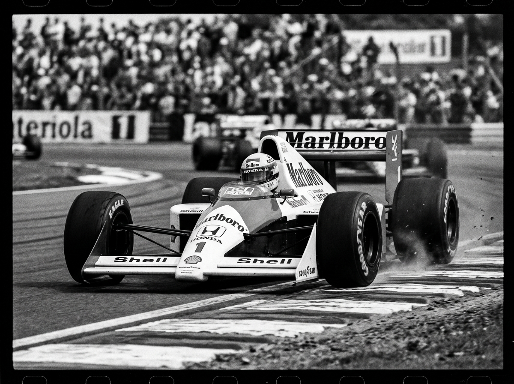

Pilotos vs. Constructores
En F1 hay dos títulos por año. El de Pilotos premia al corredor con más puntos; el de Constructores premia a la escudería (fábrica) que suma los puntos de sus dos autos y define el reparto millonario de premios.
Lo que esconden los campeonatos de la Fórmula 1
Calentamiento en la Grilla · 6 Preguntas

Analizamos cómo se distribuyen las victorias en esta competencia, identificando si existen condiciones reales de que todos los equipos ganen.
En F1 hay dos títulos por año. El de Pilotos premia al corredor con más puntos; el de Constructores premia a la escudería (fábrica) que suma los puntos de sus dos autos y define el reparto millonario de premios.
Puntúan los 10 primeros de cada carrera (25 pts al 1°, 18 al 2°, 15 al 3°... hasta 1 pt al 10°). (Nota: hasta 2009 el ganador recibía 10 puntos).
A diferencia de otros deportes, en la F1 el auto representa gran parte del rendimiento: aerodinámica, motor e inversión tecnológica marcan diferencias estructurales durante años.
Gráfico 01 · Mundial de Constructores (2000–2025)
En 26 temporadas, solo seis escuderías lograron coronarse campeonas del Mundial de Constructores. Presiona cada equipo para revelar sus trofeos y confirmar cuánta concentración existe en la cima de la Fórmula 1.
Presiona una escudería para ver sus triunfos.
Fuente: elaboración propia (vis_00) · Mundial de Constructores FIA (2000–2025).
Ferrari es el único equipo que ha competido en todas las temporadas del Campeonato Mundial de Fórmula 1 desde su inicio en 1950.
Gráfico 02 · Dominio por Temporada
En la última década, el piloto campeón ha llegado a concentrar hasta más del 86% de las victorias de una misma temporada, demostrando el nivel de dominio absoluto que puede alcanzar una escudería en la F1.
Pico máximo destacado: MÁX. 86,4% - 2023 · Línea azul: 50%
Fuente: AntoniaCastillo_DataBase_Limpia.csv · Temporadas 2000–2025.
En 2023, el neerlandés Max Verstappen ganó el 86,4% de las carreras de la temporada, es decir, 19 de 22 Grandes Premios.
Gráfico 03 · Margen del Título
Analizamos la diferencia de puntajes entre el ganador y el segundo lugar por año, la cual suele ser muy grande. Esto refuerza que ganar no es una posibilidad para todos.
Rojo: 1° Campeón · Gris claro: 2° Subcampeón
Fuente: DataBase_limpia_MarianaGajardo.csv · Temporadas 2000–2025.
En 2023, Verstappen alcanzó 575 puntos y le sacó 290 puntos de ventaja a su inmediato perseguidor (Sergio Pérez, con 285), una diferencia equivalente a más de 11 victorias.
Gráfico 04 · Desigualdad Financiera
Cada marca cuenta con un presupuesto anual distinto, lo que sin duda marca la diferencia en su rendimiento. Coincide que aquellas con mayor inversión logran más y mejores recursos técnicos, lo que se traduce en victorias que no son alcanzables para el resto.
Millones de dólares estadounidenses (USD M)
Fuente: database_limpia_F1_2015_2019_checho.csv · Era previa al límite presupuestario.

F1 ≠ mismas
condiciones
La diferencia de condiciones de cada escudería condiciona las posibilidades de liderar la competencia. Aunque compitan en la misma pista, año tras año se repite un patrón: el éxito en la F1 depende en gran medida de su condición económica y estructural.
Ya viste los números y la desigualdad en la pista. Ahora elige tu lado en la parrilla y súmate a su hinchada:
Simulador de Largada FIA ///
Acá puedes realizarlo. En una largada real, los pilotos reaccionan en apenas 200 milisegundos cuando las luces cambian. Presiona el botón para iniciar, espera a que se enciendan las 5 luces rojas y detén el cronómetro lo más rápido posible apenas cambien a verde.
Listo en la grilla de salida